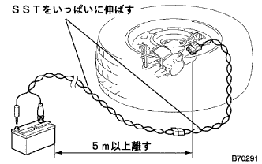
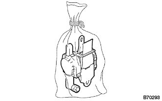

フロントシートベルトRH 廃却 |
| 1. フロントシート アウタベルトASSY RH廃却（廃却車上） |
取り扱い·作業上の注意(要領は参照)
電源切り離し(要領は参照)
フロントドアスカッフプレートRH取りはずし
フロントドアオープニングトリムウェザストリツプRH取りはずし
サイドNo.1トリムASSY RH取りはずし。
プリテンショナ作動廃却方法
保護テープを巻いた薄刃マイナスドライバーを使用して、ロッキングボタンを手前に引き出してロックを解除し、コネクタを切り離す。
 |
SSTのワニ口と端子をショートさせる。
 |
SSTをプリテンショナに接続する。
 |
SSTを車両からいっぱいに伸ばし、車両から5m以上離してバッテリを置く。
車室内および周囲の安全を確認し、SSTのワニ口をバッテリのマイナスに接続する。
SSTの端子をバッテリのプラスに接続し、プリテンショナを作動させる。
| 2. フロントシート アウタベルトASSY RH廃却（廃却単体） |
取り扱い·作業上の注意(要領は参照)
電源切り離し(要領は参照)
フロントドアスカッフプレートRH取りはずし
フロントドアオープニングトリムウェザストリップRH取りはずし
サイドNo.1トリムASSY RH取りはずし。
プリテンショナ作動廃却方法
シートベルトをリトラクタに巻き取らせる。
シートベルトが充分に巻き取られた状態でシートベルトをリトラクタより１0ｃmの位置で切断する。
 |
下記2つのSSTを接続し、コネクタホルダをロックする。
 |
SSTのワニ口と端子をショートさせる。
SSTを接続し、ロッキングボタンをロックする。
 |
ワイヤハーネス(芯線断面積１.25mm2以上)を使用して、ディスクホイール(タイヤ幅１85mm程度)にプリテンショナをコネクタが上側にして固定する。
SSTをタイヤの上側に通す。
|  |
SSTをホイール付きタイヤからいっぱいに伸ばし、5m以上離してバッテリを置く。
周囲の安全を確認し、SSTのワニ口をバッテリのマイナスに接続する。
 |
タイヤの外側から半径5m以上の位置にパイロンなどで人が立ち入らないように囲む。
SSTの端子をバッテリのプラスに接続し、プリテンショナを作動させる。
プリテンショナ廃却要領
|  |
作動したプリテンショナは、丈夫で透明なビニール袋に入れ密封し廃却する。